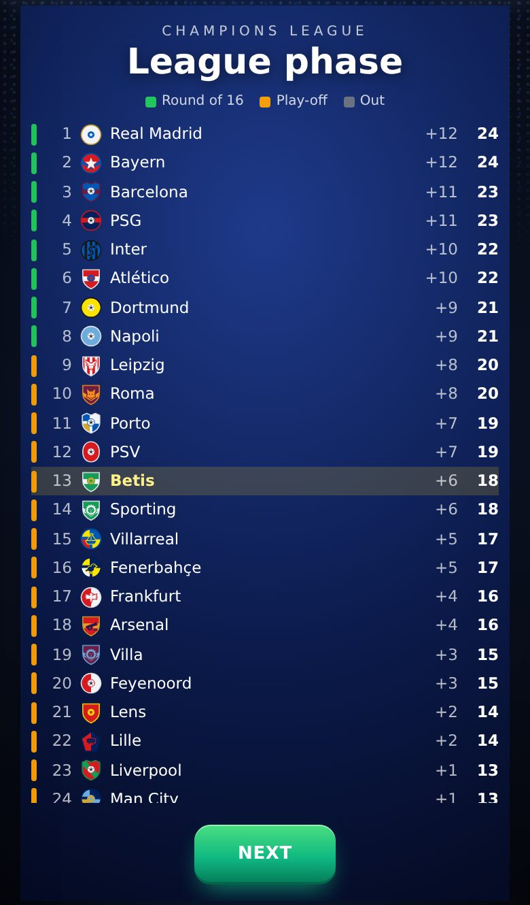
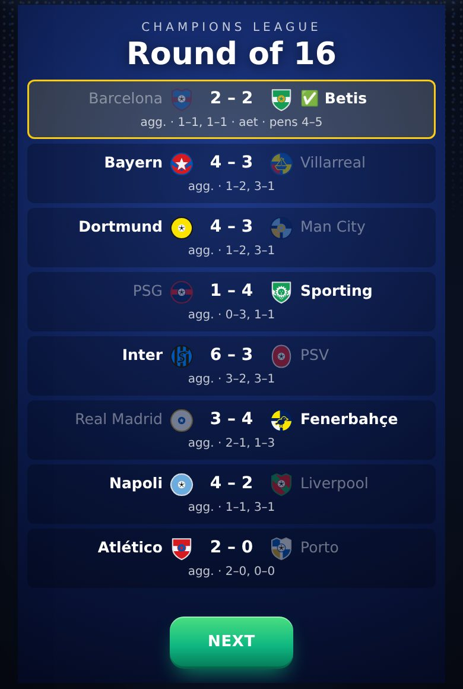
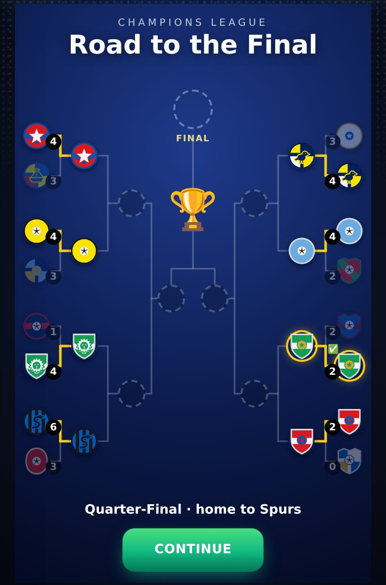
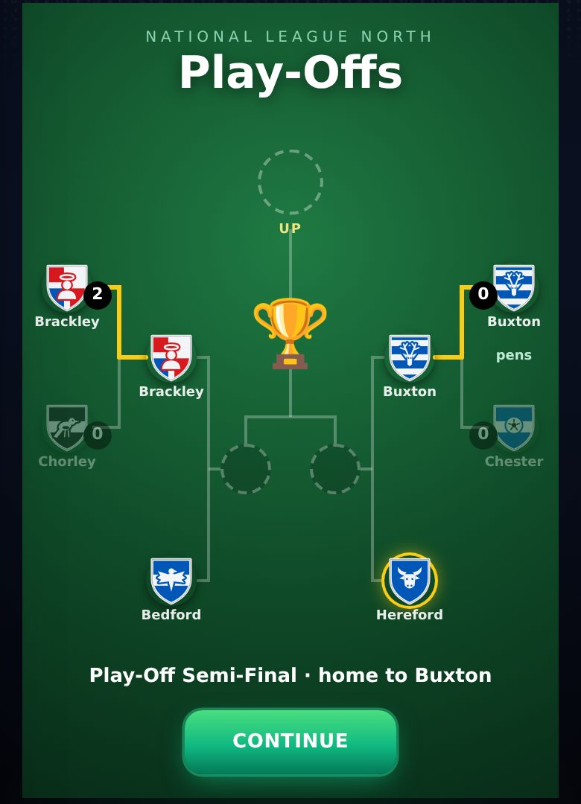
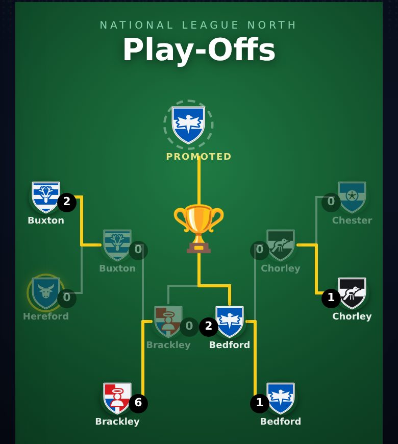
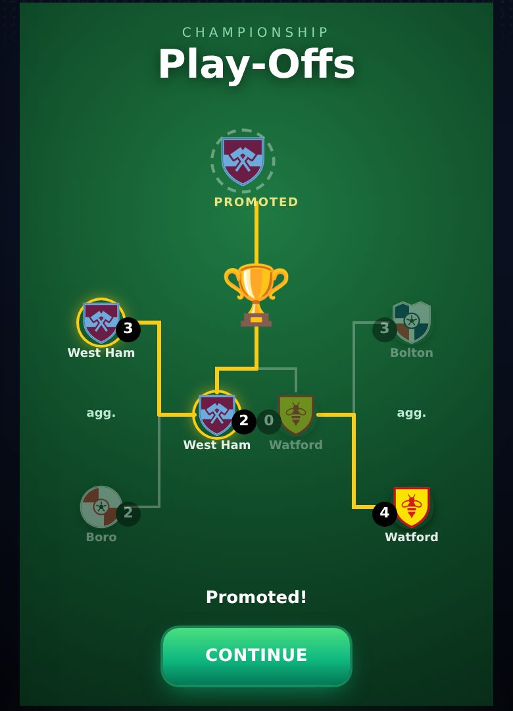
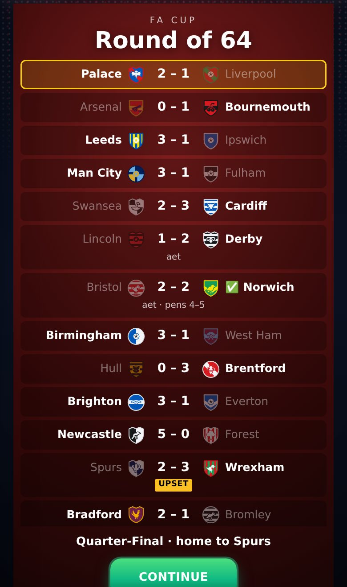
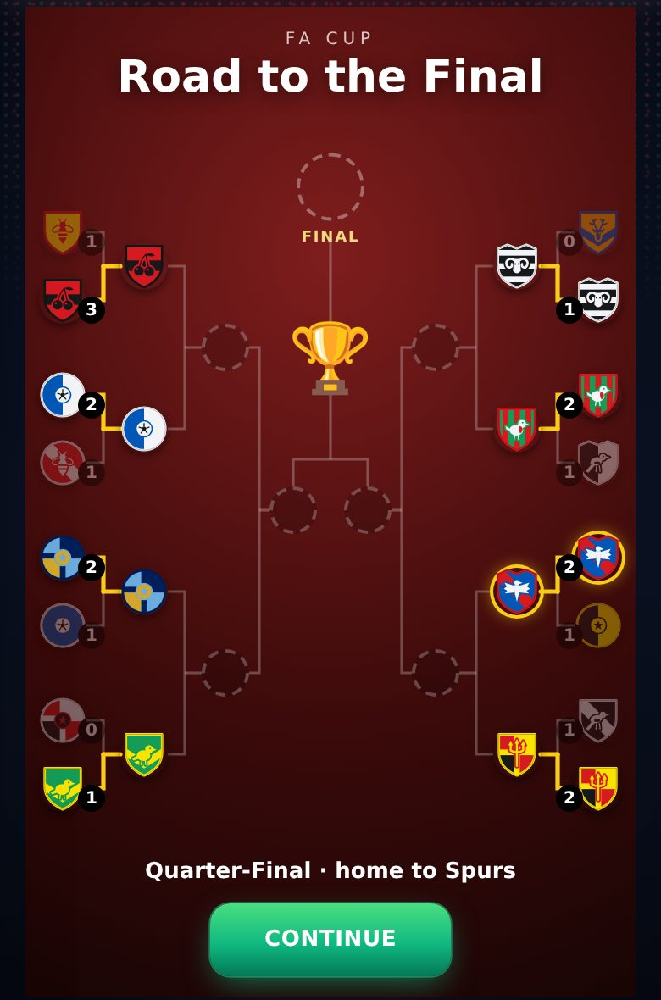
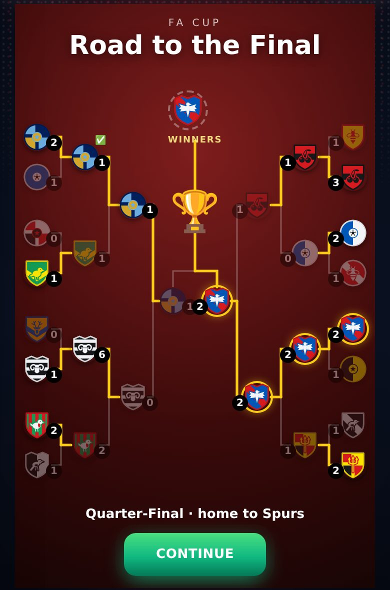

8 October 2026 · branch Mikey · tests: 279 of 279 passing · production build passes
4Knockout competitions with a results board and a bracket: FA Cup, League Cup, Champions League, Europa League
36 → 24Europe's league phase now splits into the real UEFA knockout: top 8 to the last 16, 9th–24th play off
2 legsLeague Cup semi-finals, as in England
−25% / +25%Your wage when you go down / up with your club
Check these
Headline: Europe's knockout was not real. Now it is.
The Champions League and Europa League now use the real UEFA bracket, and every tie in it is played.
Problem: after the league phase, your next opponent was picked at random from a part of the table. Nobody else's knockout tie was played. A club that "went out" could still be drawn against you, and when you went out the winner was a random pick. Why: the game only ever built your own path. Fix: a fixed bracket off the final table, as UEFA runs it now. 1st–8th go straight to the last 16. 9th–24th play off over two legs (9/10 v 23/24, 11/12 v 21/22, 13/14 v 19/20, 15/16 v 17/18). From the last 16 the path is fixed, and 1st and 2nd can only meet in the final. The better finisher plays the second leg at home; level on aggregate goes to extra time, then penalties. When you go out, the rest is played and the real winner is crowned. A save that is already in a knockout finishes it the old way. tested: 200 brackets

The league phase ends: green to the last 16, amber to the play-off, grey out. Your club is highlighted.

Round of 16 results: aggregate big, both legs small, "aet · pens 4–5" and ✅ on the winner.

The bracket after the last 16: the winners' lines go gold and their crests move into the quarter-finals.
Added
Play-off round-up: the bracket before each of your play-off matches
Problem: finishing 2nd in North/South, the other play-off ties were played in the background, and your semi-final opponent just appeared. Fix: a "Road to the Final" bracket, mirrored like a cup graphic. The round just played pops its scores in, the losers fade, the winners' lines grow and their crests slide into the next tie. Your next match pulses. Other ties stay hidden until your own match in that round is played, because they kick off at the same time. Works for every play-off: four clubs over two legs (Championship, League One, League Two, National League) and six clubs (North/South). seen on a test page at phone size

North, finishing 2nd: the 4v7 and 5v6 results, the winners moving into the semi-finals.

Out in round 1: the rest plays out and shows who went up.

Championship: two-legged semis ("agg."), then the final.
Cup round-ups: a results board every round, the bracket from the last 16
Problem: after a cup tie you only saw the next draw. Fix: after every FA Cup and League Cup tie, a board with every result of the round, yours first, with upsets flagged and "aet" or penalties shown. From the last 16, the same bracket as the play-offs. The FA Cup and League Cup are still redrawn from a hat each round, so the bracket shows each draw as it happens: the winners slide out to sit next to the club they drew. From the quarter-finals the bracket replaces the old draw screen. seen on a test page at phone size

FA Cup round of 64: your tie on top, upsets in amber, penalties with ✅.

After the last 16: the winners have moved into the quarter-finals.

After the final: the winners' crest at the top.
Relegation day
Problem: going down was a line in the feed. Fix: when the last league match leaves your club in the drop, a TV-style news flash ("relegated", and what it means for your wage or your club), five sad posts from your own fans, and a club statement. tested, not seen on screen
Changed
League Cup semi-finals are two legs
The first leg goes on the tie and puts the second leg on the calendar at the other ground. The second leg is settled on aggregate. Level on aggregate goes straight to penalties (no extra time, as in the real League Cup). The match knows a level second leg means level on aggregate. tested
Your wage when you go up or down with your club
Down: wage, goal and assist bonuses, appearance fee and loyalty bonus all −25%, and the release clause with them. Up: wage +25%, release clause with it; bonuses stay. Not when you changed club that summer: a new contract is its own deal. tested in a real season rollover
Relegated
★1,000 ★750
Promoted
★1,000 ★1,250
Offers after dropping out of North/South follow your season
You still have to pick a new club (Step 3 has no matches). But a season with no goals now gets the weakest clubs, and a great one the strongest. Before, an awful season and an average one got exactly the same offers. National League clubs come in from reputation 70 (1 in 4) up to 100 (every time), two at 90+. No offer comes from the champion or the play-off winner any more: they go up. measured: 300 runs each
Awful season
club level 59.6
Average
66.0
Great
78.8
The feed counts each division's real relegation places
It said "relegated" for the bottom three everywhere. Now: League One, National League and North/South four, League Two two, the rest three.
A Blender "anime goal" look test (not in the game)
One real recorded goal replayed in Blender in a Blue Lock style, with set cameras and effects. Only a tool for now (tools/anime3d/); nothing in the game changed.
Known issues
None of the new screens seen in a real career yet LOW
Checked on a test page built from the real cup, European and play-off code, at phone size. Not reached by playing a season through.
Promotion raises the wage only, not the bonuses LOW
As asked. Say if bonuses should go up too.
National League play-offs are still four clubs LOW
Real life uses six (2nd–7th), like North/South. Not changed.
Add numpy to the setup script LOW
Change the line to apt-get update && apt-get install -y blender python3-numpy.
Previous versions
v0.12 · 8 October 2026 · The ovation's hugs, dap-ups, pat and claps made in Blender; the farewell's 3D ovation checked in a real match
v0.11 · 8 October 2026 · 3D standing ovation; centre-back Golden Boot and day-one line-ups fixed; more assists; clearances, negotiations and Relations reworked
v0.10 · 4 October 2026 · Relationships rebuilt: bars that move slowly, one game per relationship, happiness decides recovery, no Sponsors bar; injuries switched off
v0.9 · 3 October 2026 · XP rebuilt (slower start, XP by the minute, no double pay) and the XP Book to edit every amount; 3D garden, North/South 2026/27, Club Data
v0.8 · 30 September 2026 · Sponsors Revamp: brands send offers, deal slots by fame, weekly fees, targets, brand happiness, bidding wars, buy-outs and scandals
v0.7 · 30 September 2026 · A new 1-10 star career rating separate from overall, 7 boots, dearer Style, 2 training sessions a week, restyled training, contract terms
v0.6 · 27 September 2026 · Five levels of every boot and lifestyle item, a moving ball on the strike screen, commentary that barely repeats, new chants
v0.5 · 26 September 2026 · How you get picked: win your shirt from a better-rated rival, form over 3 games, subs when the score says, cup rotation
v0.4 · 25 September 2026 · Training rebuilt the New Star Soccer way: 30 fixed levels, three tries, stars raise the skill; pace, vision and free kick matter in matches
v0.3 · 25 September 2026 · What you see on the pitch matches where people stand: nearer players and the ball drawn right, corners from the flag; trophy pictures, instant energy modes, feed likes
v0.2 · 22 September 2026 · Energy master plan: in-match energy modes, a real ticking clock, half-time KIB cans, rest days, tougher fatigue rules
v0.1 · 21 September 2026 · Economy, fame and reputation rebuild: Premier League wages to ★100k, fame levels, one reputation number, 50-season careers